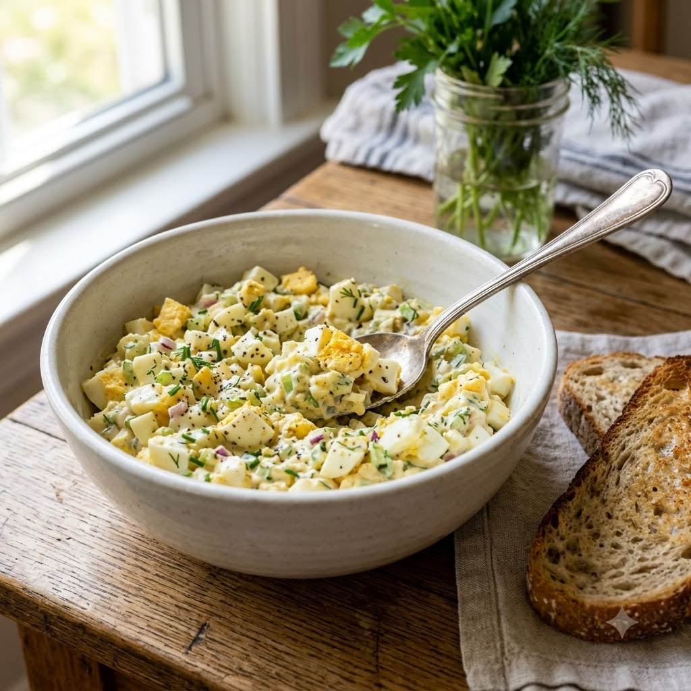

Egg Salad (Sandwich Filling)

Egg Salad (Sandwich Filling)
Airfryer – Boil Eggs 130°C 15 min + Mix — makes ~2 cups
Gluten-Free • Eggetarian • Everyday
Ingredients
- 6 eggs, boiled, peeled and chopped
- 3 tbsp mayonnaise
- 1 tsp mustard (optional)
- 1/4 cup celery or onion, finely chopped
- 1/4 tsp black pepper (kali mirch)
- Salt to taste
- Bread or lettuce leaves to serve
Method
1Preheat: Preheat the Airfryer to 130°C for 4 minutes before adding the eggs.
2Place the eggs in the basket in a single layer and air-fry at 130°C for 15 minutes; transfer immediately to an ice bath for 5 minutes.
3Peel and chop the eggs, keeping the pieces slightly chunky.
4In a bowl, mix the chopped eggs with mayonnaise, mustard, celery or onion, pepper and salt.
5Use immediately as a sandwich filling, or spoon onto lettuce leaves for a lighter option.
Tip: Chop the eggs by hand rather than mashing — a bit of texture makes a much better sandwich than a smooth paste.